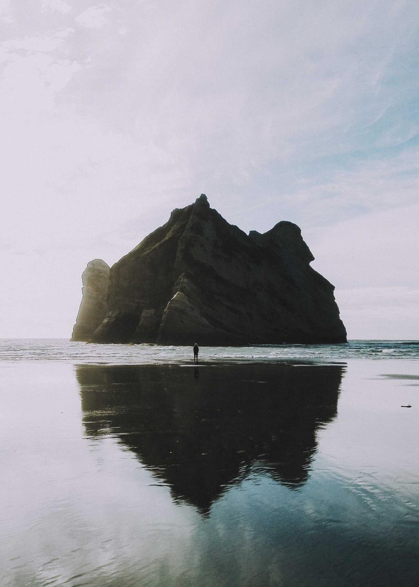

Six rooms above the harbour in Staithes
A guesthouse by the water with dinner at eight, breakfast until ten and bikes to borrow. Rooms for two from £120 a night.

A weekend from our door
Three days that start and end at the house: the moor, the bay and the long beach, with bikes, a packed lunch and dinner waiting.
-

Saturday: over the moor
Borrow two bikes after breakfast and take the moor road to the pass, 40 km with a tea room at the top.
-

Saturday night: the bay
Back by five for low tide on the scar, then dinner at eight: what the boats brought in that morning.
-

Sunday: the long beach
A slow breakfast, the cliff path to the dunes and a swim if the sea allows. Checkout is at noon, or two on request.
What a night includes. From £120 for two.
A room with a view of the water, dinner on Friday and Saturday, breakfast every day and two bikes to borrow. Dogs welcome in two of the rooms.
See the rooms and pricesRoomsSix, four with a sea view
DinnerAt eight, Friday and Saturday
Price£120 to £170 a night for two
ParkingAt the top of the village, free